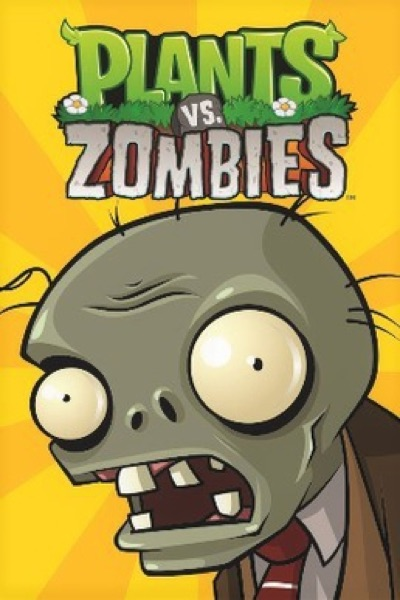

Strategy · 2009
Plants vs. Zombies
Perfectly tuned, endlessly readable, and impossible to get out of your head.

Cover: Wikipedia: Plants vs. Zombies (video game)
Facts
- Released
- 2009-05-05
- Genre
- Tower Defense
- Category
- Strategy
- Platforms
- Mobile, Nintendo, PC, PlayStation
- Developers
- PopCap Games
- Publishers
- PopCap Games
PC requirements
- Minimum
- [object Object]